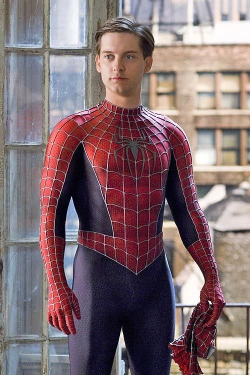

Spiderman
Universo: Marvel — Superpoder: Sentido arácnido y agilidad sobrehumana
Biografía
Peter Parker, conocido como Spiderman, equilibra su vida personal con la lucha contra el crimen usando sus habilidades arácnidas para proteger a los inocentes.
Misiones completadas
- Detención del Sindicato Araña — Desmantelamiento de red criminal (2024)
- Protección de Midtown — Evacuación y rescate durante colapso estructural (2023)
- Salvar a la Escuela — Neutralización de un dispositivo de control (2022)